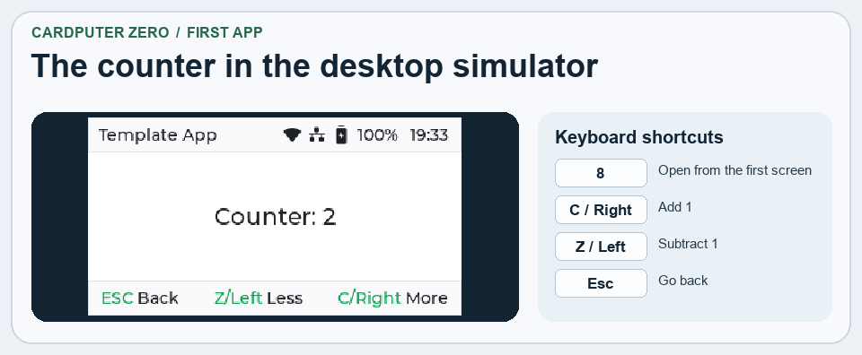

Building apps for the Cardputer Zero¶
An independent guide for building many kinds of applications on the CardputerZero Linux handheld: utilities, notes, games, networking tools, media and peripheral apps. Start with official foundations, choose only the facilities your app needs, and preserve useful lessons from real projects.
Scope and starting point¶
This guide targets the CardputerZero's Debian arm64/APPLaunch environment. The original ESP32 Cardputer and Cardputer ADV need different firmware, input and packaging instructions. Hardware/image variants can differ; document your tested profile and probe capabilities instead of assuming every device has a camera or Cap.
No radio, Python backend, local socket or background service is required by the guide. C++/LVGL with the official Template is the main native UI recipe. Other languages/toolkits can follow the same launcher, keyboard, privacy and package contracts with their own rendering/build implementations.
Start here¶
New to this device? Build your first app in the desktop simulator. You don't need a Cardputer Zero for this first build. Start with the short route if you want to see what to read and what to skip.

Open the counter with 8, try C/Right and Z/Left, then press Esc to go back. Once it works, change the greeting and add your own reset action. Simulator capture: official Template, M5Stack CardputerZero Community (MIT); annotations added.
Returning with a specific task? Use the project selector. Use the chapters below as a reference. Library decisions and historical Mesh lessons are separate resources further down this page.
Common foundation¶
| Read | Covers |
|---|---|
| 1. Platform | Device constraints, Debian, launcher and Store |
| 2. App anatomy | Package layout, launcher entry, privileges and resource ownership |
| 3. Architecture choices | A single process, workers or a separate resource-owning service |
| 4. UI and polish | Navigation, accessibility, overlays, settings, progress and performance |
| 5. Keyboard | Official map, text/navigation context, modifiers and event-path tests |
| 6. Building and packaging | Native/Python paths, dependencies, arm64 builds and installed checks |
| 8. Security, licensing and publishing | Threat boundaries, private data, attribution and release evidence |
For deeper background, read 1, 2 and 3. Then choose the UI/build path and project sections that apply. Chapter numbers and paths are retained for existing links; 7. LoRa bring-up is optional.
Optional project sections¶
The project selector covers local utilities, persistent text/messaging, GPS/maps, camera/QR, NFC/other hardware, networked apps and audio/media. Each section distinguishes transferable patterns, actual examples and qualification still required for a new app. A radio antenna rule does not become a calculator requirement; a camera example does not certify every image's camera stack.
Official foundations and focused contributions¶
Use the component comparison to see what the official Template, launcher/shared SDK and AppBuilder already provide, where my Mesh code is specific to that app, and which gaps are worth addressing upstream.
The first prepared keyboard contribution adds the official symbol map, full text input, an optional editor example and raw-event/editor tests to a pinned official Template. It is a reviewable proposal, not an accepted upstream release or a new general framework.
Personal reusable library¶
The UI preference record tracks my design decisions: the exact Mesh home carousel and Mesh list-selection base are confirmed; submenu chevrons and overflow indicators are specified. Other components remain open.
My library principles record the preferences and design choices I want to reuse across my apps, including appearance, interaction, application logic and backend organization. They complement official foundations and distinguish personal choices, useful alternatives and demonstrated improvements. I review each meaningful departure before deciding what to keep or share. These choices remain separate from the general guide's platform requirements.
The source inventory and proposed version 0.1 scope compare Mesh, Surveyor and NFC Tools, with file hashes, extraction candidates, open preferences and licensing/qualification boundaries. The official keyboard/input evaluation records the first use/adapt decision: official shared input for that runtime, with a focused Template extension considered separately. The official UI/shell evaluation records the next decision: reuse official foundations and adapt presentation to my preferences, preserving lifecycle, input and backend ownership.
M5Stack engineering review package¶
The prepared report and review package explain the improvements, exact sources, tests, licenses and remaining checks, including Mesh's deliberate modular UI/supervisor design. The package is prepared for review; no upstream PR, Store submission or new general library is implied.
Worked examples and preserved learning¶
The first counter walkthrough is the small starting example. The independent-reader check records how to test the guide without the original chat context; that check is still pending.
Mesh contributed many lessons, but it is one application. The Mesh case study retains detailed state, privacy, conversation, camera and licensing examples with pinned implementation/evidence. The lesson index explains where those lessons now live. The earlier guide remains available through its linked Git revision.
Keep source-level tests, container checks, actual-device qualification and Store admission separate. No test count guarantees security, hardware compatibility or approval for a different application.
Release and contribution checks¶
Use the Store readiness checklist and offline preflight tool to inspect a listing and its actual installer without authentication, upload or submission. Official policy/catalog revisions are pinned and reviewed; a passing local report is not a Store acceptance.
Corrections, focused examples and tested improvements are welcome. Prefer reusing or contributing to official components. Consider a separate library only after recurring needs or shared preferences, two unrelated consumers and a maintenance/compatibility plan justify it.
Offline reading edition¶
The PDF builder creates a styled reading edition with contents, bookmarks, internal chapter links and an attached source snapshot. It includes the current library principles and UI preferences; generated PDFs stay in ignored build output, separate from device installers.
License¶
The guide is CC BY 4.0, with attribution. The runnable preflight tool and tests are MIT. The prepared contribution has its own MIT license and notices; preserve upstream attribution and each component's actual terms when reusing code.
Meshtastic is a trademark of Meshtastic LLC; M5Stack and Cardputer are trademarks of their owners. This is an independent community guide, not an official SDK.